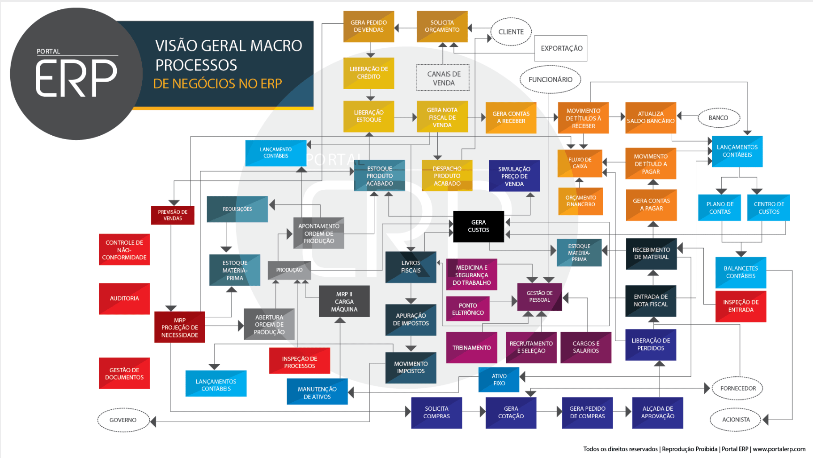

Entenda o que é ERP (Sistemas de Gestão Empresarial)
ERP é muito mais que sistemas de gestão empresarial, é um conceito da administração moderna que remete a organização e gerir os recursos da empresa.
A História do ERP e como tudo começou?
história nos conta que no fim dos aos 50 já existia um modelo de software de gestão, que demandava tempo e muito dinheiro, porque todo o trabalho ainda era realizado de forma manual.
Todo programa em seu computador, celular, tablet, smart TV, console de videogame, set-top box e etc é um software, seja ele um editor de textos, um navegador, um editor de áudio ou vídeo, um jogo, um app de streaming e por aí vai. Um software pode se apresentar de várias formas, desde um app no celular a um conjunto de cartões perfurados, usados em computadores eletromecânicos.

Veja abaixo um video com mais detalhes sobre o assunto
Os principais benefícios que as empresas têm com implantações bem-sucedidas de ERP são os seguintes; Redução de estoques 32%, Redução de Pessoal 27%, Aumento de produtividade 26%, Redução no tempo de ciclo de ordens de produção. 20%, Redução no tempo e no ciclo de fechamento contábil/financeiro 19%, Redução nos custos de TI 14%, Melhoria nos processos de suprimentos 12%, Melhorias na gestão de caixas 11%, Aumento em receitas / Lucros 11%, Melhoria em Transportes / Logística 9 %, Melhorias em processos de manutenção 7 % e Entrega no Prazo 6%.